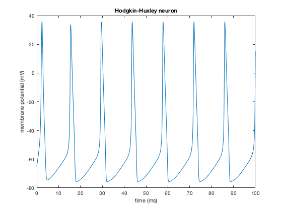
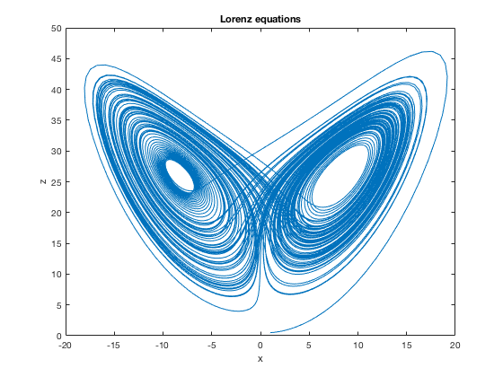

The (free) DynaSim simulator introduced in the paper:
Sherfey JS, Soplata AE, Ardid S, Roberts EA, Stanley DA,
Pittman-Polletta BR, Kopell NJ (2018) DynaSim: A MATLAB Toolbox for
Neural Modeling and Simulation Frontiers in Neuroinformatics 12:10
https://doi.org/10.3389/fninf.2018.00010
is available for download here:
http://dynasimtoolbox.org
Below MATLAB command line example installation and run excerpts from the above link:
(first the repository was downloaded and extracted to the below folder however you will likely have placed it in a different location)
addpath(genpath('~/Documents/DoNotBackup/DynaSim-master/'))
savepath
eqns={
'gNa=120; gK=36; Cm=1'
'INa(v,m,h) = gNa.*m.^3.*h.*(v-50)' % Inactivating sodium current
'IK(v,n) = gK.*n.^4.*(v+77)' % Potassium current
'dv/dt = (10-INa(v,m,h)-IK(v,n))/Cm; v(0)=-65'
'dm/dt = aM(v).*(1-m)-bM(v).*m; m(0)=.1'
'dh/dt = aH(v).*(1-h)-bH(v).*h; h(0)=.1'
'dn/dt = aN(v).*(1-n)-bN(v).*n; n(0)=0'
'aM(v) = (2.5-.1*(v+65))./(exp(2.5-.1*(v+65))-1)'
'bM(v) = 4*exp(-(v+65)/18)'
'aH(v) = .07*exp(-(v+65)/20)'
'bH(v) = 1./(exp(3-.1*(v+65))+1)'
'aN(v) = (.1-.01*(v+65))./(exp(1-.1*(v+65))-1)'
'bN(v) = .125*exp(-(v+65)/80)'
};
data = dsSimulate(eqns);
% plotting
figure;
plot(data.time,data.(data.labels{1}))
xlabel('time (ms)');
ylabel('membrane potential (mV)');
title('Hodgkin-Huxley neuron')

eqns={
's=10; r=27; b=2.666'
'dx/dt = s*(y-x); x(0)=1'
'dy/dt = r*x - y - x*z; y(0)=2'
'dz/dt = -b*z + x*y; z(0)=.5'
};
data = dsSimulate(eqns, 'tspan',[0 100], 'solver','rk4');
figure; % make a new figure window
plot(data.pop1_x,data.pop1_z); % <-- Figure 1 in DynaSim paper
title('Lorenz equations'); % asign the figure a title
xlabel('x'); % asign the x-axis label
ylabel('z'); % asign the y-axis label

The Lorenz equations and plot is figure 1 in the paper.